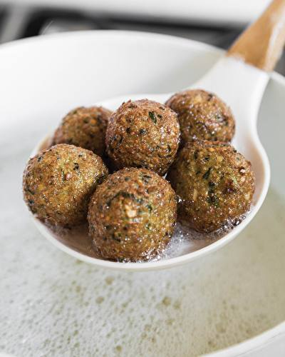

Falafel

El falafel es un clásico del Medio Oriente: croquetas doradas y crujientes hechas con garbanzos y especias. Su interior es suave y lleno de sabor, ideal para disfrutar solo o dentro de un pan pita con salsas frescas y vegetales.
Ingredientes
Para el falafel
- 2 tazas de garbanzos
- 1 cebolla
- 2 a 4 dientes de ajo
- puñado generoso de perejil
- 1 cda de polvo de hornear
- 1 cdta de pimienta
- 1 cdta de sal
- 1/2 cdta de comino
- pan árabe
Para la salsa
- 2 tomates perita
- 1 yogurt natural
- sal y pimienta a gusto
- ½ pepino
- 4 cdas de tahin (si tienen o lo quieren hacer casero)
- jugo de ½ limón
Preparación
- - Dejan 2 tazas de garbanzos remojados en agua, tapados y en la heladera de la noche a la mañana - Los van a escurrir y volcar en una procesadora - Agregan 1 cebolla picada a groso modo y de 2 a 4 dientes de ajo pelados y machacados. También un puñado generoso de perejil y otro de cilantro frescos, limpios y sin tallos - Procesan hasta formar una pasta. Si es necesario hacen una pausa para bajar con un cucharon lo que está quedando sin procesar - Vuelcan la pasta a un bowl y agregan 1 cda de polvo de hornear, 1 cdta de pimienta, 1 cdta de sal y 1/2 cdta de comino. En este momento habría que agregarle también ingredinetes típicos de la receta tradicional, pero la verdad no los quiero complicar con conseguirlos.
- - Mezclan bien la pasta y ahora sí, momento de cocinarlos - Hacen la forma de los falafel con la pasta. Pueden ser chatitos o como albondigas grandes o más chiquitas. Yo recomiendo para que la parte de adentro se cocine bien, hacerlos chiquitos con dos cucharitas o mas fácil, con las manos
- - Freírlos en abundante aceite caliente hasta dorar y retirar con espumadera sobre papel absorvente
- - Cortar 2 tomates perita en cubos - Mezclar 1 yogurt natural con sal y pimienta a gusto. También cilantro fresco, ½ pepino sin semillas pelado y rallado, 4 cdas de tahin (si tienen o lo quieren hacer casero) y el jugo de ½ limón - Hacer sanguches con el pan árabe, la salsa, el tomate y por supuesto, los falafel.
💡 Consejo: antes de freír, deja que las bolitas de falafel reposen 15–20 minutos en el refrigerador; así se compactan un poco y se deshacen menos al cocinarse..